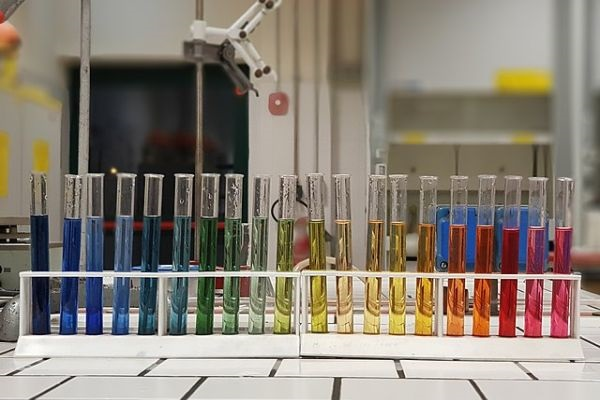

15 Acids and Bases

1. General Concepts
Brønsted Acids and Bases
Definations of Brønsted acids and bases are givin in Chapter 4. A Brønsted acid is a substance capable of donating a proton, and a Brønsted base is a substance capable of accepting a proton.
Conjugate acid-base pair The conjugate base of a Brønsted acid is the species that remains when one proton has been removed from the acid. Conversely, a conjugate acid results from the addition of a proton to a Brønsted base.
Example: Identify the conjugate acid-base pairs in the following reaction:
\[\begin{align*} \ce{CH3COOH (aq) + H2O (l) <=> CH3COO- (aq) + H3O+ (aq)} \end{align*}\]
Answer:
In this reaction, \(\ce{CH3COOH}\) is an acid, and \(\ce{CH3COO-}\) is its conjugate base; \(\ce{H2O}\) is a base, and \(\ce{H3O+}\) is its conjugate acid.
Diprotic and Polyprotic Acids
- May yield more than one hydrogen ion per molecule;
- Ionize in a stepwise manner;
- Each ionization step has a ionization constant.
Example: Give the reaction equations of the two-step ionization of \(\ce{H2CO3}\) in water.
Answer:
\[\ce{H2CO3 (aq) + H2O (l) <=> H3O+ (aq) +HCO3- (aq)} \quad \textbf{(1)}\]
\[K_{a_1}=\frac{[\ce{H3O+}][\ce{HCO3-}]}{[\ce{H2CO3}]}\]
\[\ce{HCO3- (aq) + H2O (l) <=> H3O+ (aq) + CO3^2- (aq)} \quad \textbf{(2)}\]
\[K_{a_2}=\frac{[\ce{H3O+}][\ce{CO3^2-}]}{[\ce{HCO3-}]}\]
The Acid and Base Properties of Water
\[\ce{H2O + H2O <=> H3O+ + OH-}\]
or
\[\ce{H2O <=> H+ + OH-}\]
at \(25\,^\circ\text{C}\)
\[K_w = [\ce{H+}][\ce{OH-}]=1.0\times10^{-14}\]
pH - A Measure of Acidity \[\ce{pH}=-\log [\ce{H+}]\]
In water, at \(25\,^\circ\text{C}\), \(\ce{pH}=7\) means the solution is neutral; \(\ce{pH}<7\), acidic; \(\ce{pH}>7\), basic.
\(\ce{pOH}\) can be defined as \[\ce{pOH}=-\log [\ce{OH-}]\]
Since \(K_w = [\ce{H+}][\ce{OH-}]=1.0\times10^{-14}\), \(\ce{pH}+\ce{pOH} = 14\). Knowing one of them means the other is also known. Only \(\ce{pH}\) is commonly used.
Strength of Acids and Bases
Strong acids and strong bases are strong electrolytes which are assumed to ionize completely in water.
Weak acids and weak bases are weak electrolytes which would partially ionize in water.
Important! Memorize the following common strong acids and weak acids.
Strong acids: \(\ce{HClO4}\), \(\ce{HI}\), \(\ce{HBr}\), \(\ce{HCl}\), \(\ce{H2SO4}\), \(\ce{HNO3}\).
Weak acids: \(\ce{HSO4-}\), \(\ce{HF}\), \(\ce{HNO2}\), \(\ce{HCOOH}\), \(\ce{CH3COOH}\), \(\ce{NH4+}\), \(\ce{HCN}\).
Remember the typical weak bases that would be considered in this general chemistry are mainly amines, such as \(\ce{NH3}\), \(\ce{N(CH3)3}\), \(\ce{C6H5NH2}\), etc.
- A stronger acid has weaker conjugate base.
- \(\ce{H3O+}\) or \(\ce{H+}\) is the strongest acid that can exist in aqueous solution.
- \(\ce{OH-}\) is the strongest base that can exist in aqueous solution.
Requirements
1. Understand the concepts, understand the meaning of \(\ce{pH}\) value;
2. Remember the relavent strength of common acids and bases;
3. Given an acid/base reaction, recognize which is the acid and which is the base, and tell what are their conjugate base and conjugate acid.
2. Structure and Property Correlation
Molecular Structure and the Strength of Acids
Hydrohalic acids Stronger bond, weaker acid.
\[\ce{HF}\ll\ce{HCl}<\ce{HBr}<\ce{HI}\]
Oxoacids
1. Oxoacids having different central atoms that are from the same group of the periodic table and that have the same oxidation number. Acid strength increases with increasing electronegativity of the central atom.
\[\ce{HClO3}>\ce{HBrO3}\] 2. Oxoacids having the same central atom but different numbers of attached groups. Acid strength increases as the oxidation number of the central atom increases. \[\ce{HClO4}>\ce{HClO3}>\ce{HClO2}>\ce{HClO}\]
Acid-Base Properties of Salts
Salts that produce neutral solutions A strong acid and a strong base generate a salt that produces neutral solution in water. For example, \(\ce{NaOH}\) and \(\ce{HCl}\) generate \(\ce{NaCl}\) which produces neutral solution in water. The \(\ce{pH}\) of \(\ce{NaCl}\) solution is \(7\).
Salts that produce basic solutions A strong base and a weak acid generate a salt that produces basic solution in water. For example, \(\ce{NaOH}\) and \(\ce{CH3COOH}\) generate \(\ce{CH3COONa}\) which produces basic solution in water because \(\ce{CH3COO-}\) can hydrolyze. The \(\ce{pH}\) is larger than \(7\).
Salts that produce acidic solutions A strong acid and a weak base generate a salt that produces acidic solution in water. For example, \(\ce{HCl}\) and \(\ce{NH3}\) generate \(\ce{NH4Cl}\) which produces acidic solution in water. The \(\ce{pH}\) is smaller than \(7\). Small and highly charged metal cations can hydrolyze to produce \(\ce{H+}\). For example, \(\ce{AlCl3, CrCl3, FeCl3, BiCl3, BeCl2}\) solutions are all acidic.
Note that \(\ce{Al(H2O)6^3+}\) is roughly as strong an acid as \(\ce{CH3COOH}\).
Salts in which both the cation and the anion hydrolyze If the salt is generated from a weak acid and a weak base, the \(\ce{pH}\) of the solution depends on the \(K_a\) of the cation and the \(K_b\) of the anion.
- \(K_b > K_a\) basic;
- \(K_b = K_a\) neutral;
- \(K_b < K_a\) acidic.
Acidic, Basic and Amphoteric Oxides
Oxides can be classified as acidic, basic, or amphoteric, see following Figure.
The basic metallic oxides react with water to form metal hydroxides. Acidic oxides and water usually generate acids.
\[\ce{Na2O(s) + H2O(l) -> 2NaOH(aq)}\]
\[\ce{SO3(g) + H2O(l) -> H2SO4(aq)}\]
Reactions between acidic oxides and bases and those between basic oxides and acids resemble normal acid-base reactions
\[\ce{CO2(g) + 2NaOH(aq) -> Na2CO3(aq) + H2O(l)}\]
\[\ce{BaO(s) + 2HNO3(aq)-> Ba(NO3)2(aq) + H2O(l)}\]
aluminum oxide (\(\ce{Al2O3}\)) is amphoteric. Depending on the reaction conditions, it can behave either as an acidic oxide or as a basic oxide.
\[\ce{Al2O3(s) + 6HCl(aq) -> 2AlCl3(aq) + 3H2O(l)}\]
\[\ce{Al2O3(s) + 2NaOH(aq) + 3H2O(l) -> 2NaAl(OH)4(aq)}\]
Requirements
1. Remember the trends of the acidity strength of hydrohalic acids and oxoacids.
2. Remember the examples of salts those produce neutral, acidic or basic solutions. Know how to determine the acidity of a salt solution when both the cation and the anion hydrolyze.
3. Remember the examples and properties of acidic, basic and amphoteric oxides.
3. Lewis Acids and Bases
A Lewis Base is a substance that can donate a pair of electrons;
A Lewis Acid is a substance that can accept a pair of electrons.
Learn how to recognize Lewis acids and bases from the following examples:
Requirements
1. Understand the defination of Lewis acid and base. Recognize the Lewis acids and bases in reactions.
Practice Questions
Calculate the concentrations of \([\ce{H+}]\) and \([\ce{OH-}]\) and the \(\ce{pH}\) and \(\ce{pOH}\) values for a solution of NaOH with the concentration of 0.00246 M. (Answer: pH = 11.4, pOH = 2.61, [H\(^+\)]=\(4.06\times 10^{-12}\) M, [OH\(^-\)]=0.00246 M.)
Calculate the concentrations of \([\ce{H+}]\) and \([\ce{OH-}]\) and the \(\ce{pH}\) and \(\ce{pOH}\) values for a solution of HCl with the concentration of 0.0431 M. (Answer: pH = 1.36, pOH = 12.6, [OH\(^-\)]=\(2.32\times 10^{-13}\) M, [H\(^+\)]=0.0431 M.)
Calculate the \(\ce{pH}\) of a weak acid (\(\ce{HA <=> H+ + A-}\)) solution with the concentration of 0.000147 M and \(K_a=1.43\times10^{-3}\). (Answer: pH = 3.87)
Calculate the \(\ce{pH}\) of a weak base (\(\ce{BOH <=> B- + OH-}\)) solution with the concentration of 0.00346 M and \(K_b=7.22\times10^{-5}\). (Answer: pH = 10.67)
Calculate the \(\ce{pH}\) of a \(\ce{NH4Br}\) solution with the concentration of 0.0518 M, knowing \(K_b=1.8\times10^{-5}\) for \(\ce{NH3}\). (Answer: pH = 5.86)
Identify the conjugate acid-base pairs in the following reactions.
\[\begin{align*} & \ce{HNO3 + H2O <=> H3O+ + NO3-}\\ & \ce{H2S + NH2- <=> HS- + NH3}\\ & \ce{H2SO4 + Cl- <=> HCl + HSO4-}\\ & \ce{O^{2-} + H2O <=> 2OH-}\\ \end{align*}\]Compare the strength of each pair of acids:
\[\begin{align*} & \ce{H2O}\text{ and }\ce{HF}\\ & \ce{HCl}\text{ and }\ce{HI}\\ & \ce{HBrO2}\text{ and }\ce{HBrO3}\\ & \ce{H2SO3}\text{ and }\ce{H2SO4}\\ \end{align*}\]Identify which salts will produce acidic solutions in water, which will be basic, and which will be neutral?
\[\begin{align*} & \ce{NaBr}\\ & \ce{KNO3}\\ & \ce{NaF}\\ & \ce{NH4Cl}\\ \end{align*}\]Complete the following reactions (oxide + acid or oxide + base)
\[\begin{align*} & \ce{MgO + H2SO4 -> ?}\\ & \ce{SO3 + KOH -> ?}\\ \end{align*}\]Identify the Lewis acid and Lewis base in each of the following reactions.
\[\begin{align*} & \ce{CO2 + OH- -> HCO3-}\\ & \ce{AlCl3 + Cl- -> AlCl4-}\\ \end{align*}\]
Copyright
Copyright(C) 2022 Yu Wang

This work is licensed under a Creative Commons Attribution 4.0 International License.